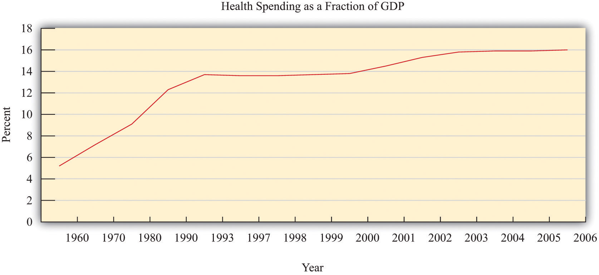
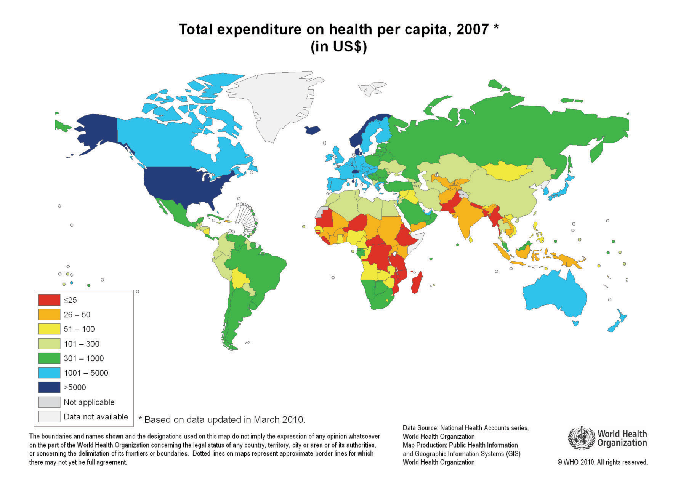
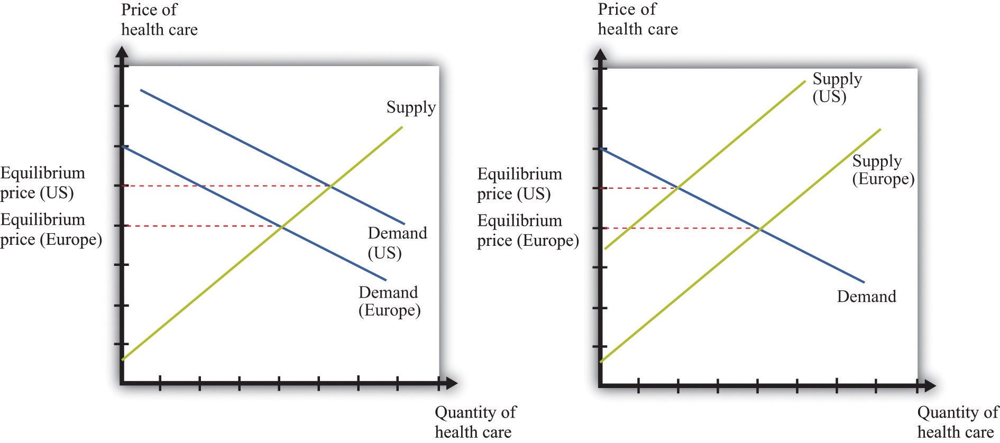
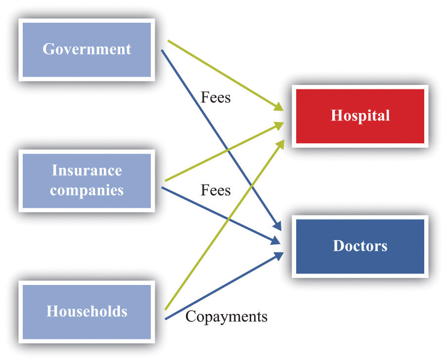

What do you do when you are ill? You might first go to a drugstore, browse the shelves a bit, and find an over-the-counter medication that you think will make you feel better. Your choice of product could be influenced by many things, including past experience, the advice of friends, or perhaps an advertisement you saw on television.
If the trip to the drugstore doesn’t solve the problem, a visit to a doctor usually comes next. The first doctor you visit is likely to be a general practitioner, or GP for short. Even if insurance is picking up some of the cost, a trip to the doctor is often not cheap. Nor is it usually fun: it may involve long waits and unpleasant tests. We go to the doctor not because we enjoy the experience in itself but because of a deeper demand—a desire to be healthy.
A trip to the doctor typically ends with a bill, a prescription, and perhaps a smile along with a “see you again soon.” (That last bit, of course, is not quite what you want to hear.) Then you go to the pharmacy to fill the prescription. If you look at the piece of paper the doctor gave you, you might notice a couple of things. First, the doctor’s handwriting is often illegible; penmanship is evidently not high on the list of topics taught at a medical school. Second, even if you can read what is written, it probably means nothing to you. The chances are that it probably names some medication you have never heard of—and even if you have heard of it, you probably have no idea what the medication does or how it works.
In other words, though you are the purchaser and the patient, your treatment is largely out of your hands. Health-care purchases do not directly reflect individual choices the way most other spending decisions do. You did not choose to be sick, and you do not choose your treatment either.
Occasionally, your GP might recommend that you visit another doctor, called a specialist. Your GP might try to explain the basis of this recommendation, but you probably lack the expertise and the knowledge to evaluate the decision. Once again, you must trust your doctor to make a good decision for you: the decision to visit the specialist is largely your doctor’s rather than your own. You typically follow the doctor’s advice for two reasons: (1) you trust the doctor to make decisions in your best interest, and (2) if you have medical insurance, you do not have to pay most of the costs.
We have described this as though you have no control at all over your own health care and treatment. This is an exaggeration. If you are somewhat informed or knowledgeable about what is wrong with you, then you can discuss different treatment options with your doctors. You can become at least somewhat informed by reading articles on the Internet. You can seek out second and third opinions if you do not trust your doctor’s diagnosis. If you are having serious treatments, such as a surgical procedure, you will have to sign forms consenting to the treatment. There is a trend these days for people to become more involved and empowered about decisions involving their own health. Yet, unless you have medical training yourself, you will have to rely to some degree, and probably a very large degree, on the advice of your doctors.
If you are seriously ill, you may have to go to the hospital. There you have access to many more specialists as well as a lot of specialized equipment. Whatever autonomy you had about your treatment largely disappears once you enter the hospital. At this point—at least if you are living in the United States—you certainly should hope you have insurance coverage. Hospital costs can be astounding.
If you look back in history, health care was not always provided the way it is today. One difference is that doctors used to visit patients at home. They would traditionally arrive with a small black bag containing their basic tools. (This type of service is still provided in some communities and in some countries, but it is now rare in the United States.) For the most part, that was where your medical treatment ended.
In part, this reflected the state of medical knowledge at the time. It is hard to comprehend how much medical science has advanced in the last century. One hundred years ago, our knowledge about the workings of the human body was rudimentary. There were few treatments available. Antibiotics had not yet been discovered, which meant that the simplest injury—even a scratch—could become infected and be fatal. If you had appendicitis, it would very likely kill you. There were few means of diagnosis and no treatments for cancer.
Today, the story is very different. We visit specialists who have highly advanced (and expensive) training. We have access to advanced diagnostic tools, such as magnetic resonance imaging (MRI) scans, blood tests that identify markers for cancer, and genetic testing. We also have access to expensive treatments, such as kidney dialysis and radiation therapy. Perhaps most strikingly, we have access to a range of pharmaceutical products that have been developed—sometimes at great expense—by scientists and researchers. These products can treat medical conditions from asthma to apnea to acne.
With all these visits to doctors and all these medications, we spend a great deal on health care. Spending as a fraction of gross domestic product (GDP; a measure of the total output of the economy) has been increasing since 1960 (Figure 16.1 "US Health-Care Expenses as a Percentage of GDP"). Figure 16.2 "Global Health-Care Spending" shows total spending on health services per person around the world.World Health Organization, “Total Expenditure on Health per Capita, 2007 (in US$),” accessed March 1, 2011, http://www.who.int/nha/use/the_pc_2007.png. The shaded areas indicate the level of spending on health-care services. The United States spends the most on health care per person, with Norway and Switzerland also being high-spending countries. Other rich countries, such as Japan, Australia, New Zealand, South Korea, and countries in Western Europe, likewise spend relatively large amounts on health care. The poorer countries in the world, not surprisingly, spend much less per person on health care. Across countries in the world, as within a country, health-care purchases are related to income.
Figure 16.1 US Health-Care Expenses as a Percentage of GDP
Figure 16.2 Global Health-Care Spending
One reason that we spend so much on health care in the United States is that high-quality care, such as is available in rich countries, is at least in part a luxury good—that is, something that we spend relatively more on as our income increases. Yet even across relatively affluent countries, health care takes very different forms.A comparison of programs is provided by Ed Cooper and Liz Taylor, “Comparing Health Care Systems: What Makes Sense for the US?” In Context, accessed March 14, 2011, http://www.context.org/ICLIB/IC39/CoopTalr.htm. Compare, for example, the United States and Canada. Canada has a system in which the government pays for health care. The program is financed by the payment of taxes to the government. Doctors’ fees are set by the government, which limits competition within the health industry. Furthermore, other developed countries spend much less on health care than the United States but have health outcomes that are as good or even better.
Differences in both the quality and cost of health care mean that, perhaps surprisingly, health care is traded across national boundaries. In some cases, people travel across the globe to obtain care in other countries. Sometimes, people travel to obtain treatments that are unavailable in their home countries. For example, US residents sometimes travel to other countries to obtain stem-cell treatments that are banned in the United States. Or people may seek health care in other countries simply because it is cheaper: people from around the world travel to Thailand, for example, to obtain cheap and reliable dentistry services. There are even tour operators that arrange such “health tourism” trips.National Public Radio had a March 18, 2008, story of a husband and wife going to China for get stem-cell treatment for their seven-month-old daughter (http://www.npr.org/templates/story/story.php?storyId=88123868). There is also a company that organizes trips to Canada (http://www.findprivateclinics.ca/resources/general/medical-tourism.php). Given all these differences in health care costs around the world, we address the following question in this chapter:
What determines the cost of health care?
Because we want to talk about the price of health care, supply and demand is a natural starting point. As we use this framework, though, it will rapidly become clear that there are many things that are unique about the market for health care. One indication of this is that there is a whole subfield of economics called “health economics.” There is no subfield called “chocolate bar economics,” “tax advice economics,” or “lightbulb economics.” Evidently, there is something different about health care. Another indication is the fact that governments around the world pay an enormous amount of attention to this market. Governments intervene extensively in this market through taxes, through subsidies, and sometimes by being the direct provider of health-care services.
We first study the demand for health care by households. Then we look at the supply of health care, after which we turn to the determination of prices. As we proceed, we will see that health care includes all sorts of different products and services. We will also see that there are many reasons why it is difficult to analyze health care with a simple supply-and-demand framework.
One key reason why health care is such a complicated topic has to do with the fact that, frequently, we do not pay for health care ourselves. Rather, we (or our employers) purchase health insurance, and then the insurance company pays the health-care providers. We therefore discuss health insurance in some detail. The chapter ends with a discussion of the government’s role in the health sector, in which we talk about market failures and a variety of proposed government solutions.
Suppose we want to explain why health care is more expensive in the United States than in Europe. Then supply and demand seems like a natural starting point. If we imagine a market for health care drawn in the usual way, with the quantity demanded on the horizontal axis and the price on the vertical axis, then the question becomes, “Why is the price of health care higher in the United States than in Europe?”
Supply and demand offers two possible answers (Figure 16.3 "Two Explanations for Why Health Care in the United States Is More Expensive Than in Europe"). The prices can be high because demand is high. For example, if the demand curve is further to the right in the United States compared to Europe (part [a] of Figure 16.3 "Two Explanations for Why Health Care in the United States Is More Expensive Than in Europe"), this implies—all else being equal—higher prices in the United States. The other reason for high prices is because supply is limited. If the supply curve in the United States lies further to the left than the supply curve in Europe (part [b] of Figure 16.3 "Two Explanations for Why Health Care in the United States Is More Expensive Than in Europe"), then this also would imply—all else being equal—higher prices for health care in the United States. Neither argument seems that compelling, which naturally leads us to wonder if the supply-and-demand framework is really the best framework for analyzing health care. In fact, there are good reasons to think that the supply-and-demand framework is not the best approach to this market.
Figure 16.3 Two Explanations for Why Health Care in the United States Is More Expensive Than in Europe
Supply and demand offers two possible explanations of high health-care costs in the United States: demand in the United States is high (a), or supply in the United States is limited (b). Neither is a very compelling explanation.
Let us think about the demand side first. Our standard approach to demand is based on the idea that each individual will consume a good or a service up to the point where the marginal valuationThe maximum amount an individual would be willing to pay to obtain one extra unit of that good. from one more unit equals the price of that additional unit.Chapter 4 "Everyday Decisions" explains this idea in more detail. Unfortunately, the health-care consumer often has very little idea of the value—let alone the marginal valuation—of the particular treatment being received. The consumer is very often not paying the full price for that treatment because the cost is frequently covered, at least in part, by insurance. Together, these mean that our traditional approach to demand does not work very well for health-care services.
The supply side is also problematic. First of all, some health-care suppliers have significant market powerA firm that has a downward-sloping demand curve.. This does not mean that we can get no insights from supply-and-demand reasoning. But it is trickier to compare the price of health care across countries because we have to consider differences in market power as well. A bigger problem is that some health-care suppliers, such as hospitals, are either government-controlled or not-for-profit institutions. The standard economic approach presumes that firms seek to make as much profit as possible, but government or not-for-profit hospitals may not have profit maximization as their goal.
In addition, health-care prices are not necessarily determined by supply and demand. Again, the government has a significant influence on prices: for example, the governments in some countries set prices for pharmaceutical products. Even if they are not set by the government, prices may be determined by bargaining between, say, hospitals and drug companies rather than by supply and demand. Furthermore, if people need health-care services, then their demand is likely to be very inelastic (the quantity demanded does not respond much to price changes). Inelastic demand is not, in and of itself, a problem for a competitive market. It just means that the equilibrium price could be very high. But if we couple inelastic demand with consumers who lack information and add in some market power by suppliers, then matters become more complicated. Perhaps you already have a sense of why: we have a large group of consumers with very inelastic demand who are relatively uninformed. This sounds like a gold mine for the supplier.
We have so far ignored the issue of what exactly is being traded in this market. “Health-care services” can mean many very different things:
You can probably think of other components as well. So it is more than a little misleading to treat health care as something homogeneous that is bought and sold in a single market.
We hope that by now we have completely muddled your view of the health-care market. Our main point is that the simple framework of supply and demand is not sufficient for understanding health care. There are too many different markets, each with its own peculiarities and unusual features. And those features mean that there are several reasons why we might expect inefficiency. One, as we have already noted, is the presence of market power. Another is the various information problems we have mentioned. A third is that some aspects of health care have the characteristics of a public goodA good that is both nonrival and nonexcludable: it can be provided to many users without excluding anyone..
Now let us dig a little deeper into the demand side of health care.
The law of demand applies to health care as in other markets: as the price of health care increases, you demand less of it. But we must be careful. What matters is the price of health care to you. If you have health insurance, this price may be much lower than the actual cost of providing you with care. Under most health-insurance contracts, the marginal private cost of care to a household is less than the marginal social cost of providing that care. The household has an incentive to purchase a lot of health-care services because its purchases are, in effect, being subsidized by insurance companies. We take up the topic of health insurance later in this chapter.
Toolkit: Section 31.19 "Externalities and Public Goods"
You can review the distinction between marginal private cost and marginal social cost in the toolkit.
Another key characteristic of health care is that demand is relatively inelastic. If you are sick and require care, you will purchase health-care services at almost any price. Of course, your ability to purchase health care is ultimately limited by your income, but you are likely to trade off spending on many other products to purchase the medical care you need. This is why we often read stories about people without insurance being bankrupted by medical expenses.
Everyone prefers being healthy to being sick. The demand for health care is in part an expression of this preference. One thing that makes health care different from most other goods and services, though, is that it is simultaneously an investment. Money you spend on being healthy today will also benefit you in the future. There are several different ways in which spending on health care represents an investment.
Mortality. One clear impact of our health-care choices can be seen in terms of mortality rates. Mortality rates measure how likely we are to die at different ages. In 2004, the mortality rate in the United States for people ages 15–24 was about 80 out of 100,000, or 0.08 percent. In contrast, the mortality rate for those over the age of 85 was 13,823 out of 100,000, or 13.8 percent.Mortality rates can be found at the National Center for Health Statistics, National Vital Statistics System, “Mortality Tables,” accessed March 14, 2011, http://www.cdc.gov/nchs/nvss/mortality_tables.htm. In other words, the typical young person has about a 1 in 10,000 chance of dying in a given year, whereas the typical old person has more than a 1 in 10 chance of dying.
It is not surprising that the mortality rate increases with age—that is, that young people have a lower probability of dying than older people. (Infants are an exception: a 6-month-old child is more likely to die than an 18-month-old child because very young children are particularly susceptible to certain diseases.) But these average mortality rates disguise a lot of variation, much of which is under our control. There are many behaviors that have predictable effects on our likelihood of dying. Smokers have a higher probability of dying than nonsmokers. Those who are obese have a higher probability of dying than those who are not. Diet, exercise, and risky behaviors (which includes everything from unprotected sex to skydiving) affect mortality rates as well.
Cigarette smoking is linked to lung cancer and thus to mortality. If you compare two similar individuals of the same age, one who is a smoker and the other a nonsmoker, then the mortality rate is significantly higher for the smoker. This does not mean that the smoker will necessarily die before the nonsmoker. It means that all else being the same, smoking increases the probabilityThe percentage chance that an outcome will occur. of death. Refraining from smoking is a type of investment in your future.
Our diet also affects our probability of becoming ill and of dying. As with cigarettes, there are often trade-offs between eating and drinking things we enjoy and the effects of such consumption on our long-term health. Making these types of choices is an economic decision. Each of us makes different choices because we value the taste of particular foods differently, and we value our overall health differently as well. If a thirty-year-old discovers he has elevated cholesterol levels that pose a long-term risk of heart disease, he may decide to adjust his diet, perhaps consuming less red meat. If an eighty-year-old learns the same news, he may not think the long-term benefit is worth giving up his steaks for.
Productivity. Being healthy also means that you can work and earn wages. One of the costs of poor health is lost days at work. This is a cost not only to the individual but also to society as a whole: the economy’s population is producing less output. If you are in poor health, then you risk losing wages for the days when you cannot come to work. Many employers provide insurance for these lost wages through the provision of sick days: if you are sick, you are not expected to work but you will still be compensated up to a contracted number of days per year. In addition, there is disability insurance as part of the social security system in the United States.The government program is summarized at http://www.ssa.gov/disability. Private employers sometimes also offer disability insurance as part of their compensation packages, and you can also purchase insurance directly from an insurance company.
Health care is an example of a good for which the typical individual is unable to determine the quality of what is being purchased. You can think of other examples, such as legal services and used cars. In such situations, how can we make good decisions? Generally we do so by relying on the advice of experts. In the case of health, these are the doctors, dentists, and other health professionals who are trained to analyze our health situation and make suggestions to us. We listen, try to understand, and, using their advice, make an informed choice.
Suppose you get a phone call from someone telling you they know of a stock, trading on Wall Street, that will double in price the following day. You might be very skeptical, suspecting that they have other reasons for wanting you to buy. Compare this to a conversation with a medical expert. Generally you are going to believe that the expert is acting in your best interests. Although you might get a second (or third) opinion, you do so because health problems are complex and the first expert may have missed something, not because you are afraid the doctor is misleading you in order to profit from your visit. But why do we trust medical experts so much more than the provider of stock tips? We generally do so because we trust that their incentives are aligned with our goals; that is, we hope that they are motivated to act in our best interests.
We now turn to the supply side of health care. Economists often talk of output being produced using a production function that uses labor, capital, and intermediate inputs. What is the production function of a hospital?
Other sectors of the health-care industry likewise employ labor, capital, and intermediate inputs.
Toolkit: Section 31.17 "Production Function"
You can review the meaning and definition of a production function in the toolkit.
If you look at the wall in your doctor’s office, you will typically see a large number of framed degrees and other qualifications. To become a doctor, you must first succeed as an undergraduate and then go through multiple years in medical school. After this comes an internship and then you finally graduate and can practice on your own. In most countries, you must have a license to practice medicine. This makes sense: you would not want anyone to advertise as a doctor regardless of their skill level. Most of us would be unable to tell whether a particular individual was a qualified professional or a quack. When buyers cannot easily evaluate the quality of the good or the service they are purchasing, it is useful to have external validations of quality.
Licensing provides more than a guarantee of quality, however. It also limits entry into the profession. Suppose you learned that a small group of lobbyists in your hometown wanted gas station owners to be licensed in the same way as physicians. You would quite rightly suspect that their goal was not to guarantee high-quality gasoline. More likely, they would be trying to limit the number of gas stations to increase their market power. Your suspicions would not be allayed if these lobbyists argued that gas was potentially a very harmful commodity, so by licensing the sellers of gas, they were protecting the community. In the case of doctors, the underlying reason for licensing is not so nefarious. But it still creates a barrier to entryA cost for new firms (or individuals) to enter into and compete in a market. that limits competition and increases market power, just as it would with gas stations.
Doctors differ from gas station owners in many other ways. Typically, we suppose that gas stations and other firms in an economy have profit maximization as a goal. It is this presumption that allows us to develop our theory of supply. Doctors not only think about profits but also take an oath of office, called the Hippocratic Oath, which is as follows:
I swear by Apollo, the healer, Asclepius, Hygieia, and Panacea, and I take to witness all the gods, all the goddesses, to keep according to my ability and my judgment, the following Oath and agreement:
…
I will prescribe regimens for the good of my patients according to my ability and my judgment and never do harm to anyone…
I will not give a lethal drug to anyone if I am asked,…Wikipedia, s.v. “Hippocratic_Oath,” accessed March 14, 2011, http://en.wikipedia.org/wiki/Hippocratic_Oath.
This oath is administered to nearly everyone obtaining a medical degree.
In addition to doctors and specialists, there are many other kinds of workers in the health care industry, including nurses, dental hygienists, administrative staff, technicians, staff in care facilities such as hospices and nursing homes, and many others. The health-care industry employs almost 10 percent of all civilian workers in the United States.
Table 16.1 "Employment in Health Services (in Millions)" shows the breakdown of employment by health-service site for three years: 2000, 2003, and 2006. We list some (not all) of the types of health sites. From the table, we see that the number of workers in this industry has increased from 12.2 million in 2000 to about 14.4 million in 2006. This increase is typical of many service industries and contrasts with manufacturing, where the number of workers employed is declining.
Table 16.1 Employment in Health Services (in Millions)
| Type of Health Service Site | 2000 | 2003 | 2006 |
|---|---|---|---|
| Physicians (offices and clinics) | 1.4 | 1.7 | 1.8 |
| Hospitals | 5.2 | 5.6 | 5.7 |
| Nursing care facilities | 1.6 | 1.9 | 1.8 |
| Total | 12.2 | 13.6 | 14.4 |
Source: National Center for Health Statistics, Health, United States, 2007 with Chartbook on Trends in the Health of Americans (Hyattsville, MD: US Department of Health and Human Services, 2007), table 105, accessed February 1, 2011, http://www.cdc.gov/nchs/data/hus/hus07.pdf.
Hospitals are the most important type of employment site for health-care workers. In 2006, 40 percent of health-care workers were employed in hospitals. About three-fourths of the workers in the health-care sector are women. Women are particularly prevalent in nursing care facilities: of the 1.6 million workers in nursing care facilities in 2000, about 1.4 million were women.
There is a wide variety of occupations within health care: managers, professionals (doctors, dentists, pharmacists, etc.), service occupations (assistants, cooks, cleaners, etc.), and office workers. Professional groups account for about 44 percent of all workers, while about 32 percent of the jobs are in service occupations. There will typically be considerable variation of wages within a sector because of the different occupations of workers in that sector. For example, individuals working in diagnostic laboratories earn, on average, close to twice the wage of workers in nursing homes.
When we look at an industry such as health care, one way of describing it is by counting the number of doctors’ offices, clinics, and so on. There are many different kinds of establishments that provide health services. Hospitals are only one example; others include doctors’ offices, clinics, nursing homes, and so on. According to the Bureau of Labor Statistics (http://www.bls.gov/oco/cg/cgs035.htm), in 2008, there were 595,800 establishments in the health-care sector in the United States. Of these, doctors’ offices are 36 percent. Hospitals are only 1 percent.US Department of Labor, Bureau of Labor Statistics, “Career Guide to Industries, 2010–11 Edition: Healthcare,” accessed March 14, 2011, http://www.bls.gov/oco/cg/cgs035.htm. Another way to describe the industry is by detailing the number of workers employed in different activities, as in Table 16.1 "Employment in Health Services (in Millions)".
Taken together, these statistics paint an interesting picture. Hospitals are a small fraction of the total health-care establishments but employ 35 percent of the workers. This tells us that there are relatively few hospitals (compared to doctors’ offices), but they are big. About 70 percent of hospitals employ more than 1,000 workers. Such a pattern is not peculiar to the health-care sector. In US manufacturing, the majority of establishments are small, and a few large establishments employ the majority of workers.This is described in Steven J. Davis, John C. Haltiwanger, and Scott Schuh, Job Creation and Destruction (Boston, MA: MIT Press, 1998). We discuss this phenomenon in more detail in Chapter 9 "Growing Jobs".
The ownership of hospitals is also complicated. Some are private, while others are public, meaning that federal, state, or even county governments run them. In addition, not all private hospitals are in business for profit; some are classified as not-for-profit institutions. Table 16.2 "Hospital Activity, 2005" provides a breakdown of hospitals by type. From this table, you can see that most admissions are in not-for-profit hospitals that are not federally run. Their goal is largely to provide a public service. These hospitals have a length of patient stay averaging about 5.5 days.
Table 16.2 Hospital Activity, 2005
| Type of Hospital | Admissions (Thousands) | Average Length of Stay (Days) |
|---|---|---|
| All | 37,006 | 6.5 |
| Federal | 952 | 11.6 |
| Nonfederal, not-for-profit | 25,881 | 5.5 |
| Nonfederal, for-profit | 4,618 | 5.3 |
Source: National Center for Health Statistics, Health, United States, 2007 with Chartbook on Trends in the Health of Americans (Hyattsville, MD: US Department of Health and Human Services, 2007), table 105, accessed February 1, 2011, http://www.cdc.gov/nchs/data/hus/hus07.pdf.
There are other capital goods that enter the production function for the health sector. For example, pharmaceutical production facilities are part of this capital stock. So too is the capital stock of companies that produce the machines, such as MRIs, used in doctors’ offices and hospitals.
Technological advances in health care are truly staggering. Technological progress in this sector, as in other sectors, comprises both product and process innovations. By product innovations, we mean increases in the types of goods and services available to households and doctors. A leading example is the vast array of drugs now available on the market, which is the outgrowth both of research and development at pharmaceutical companies and of publically funded research. Another example is the advanced machinery used in modern health-care facilities. A modern dentist’s office is filled with high-speed drills, x-ray machines, and other pieces of technology that would have been unthinkable in your grandparents’ day. MRI machines are another example: these are a significant advance over previous imaging techniques such as X-rays, but they are expensive—a new MRI machine will typically cost a hospital more than $1 million.An article describes this technique at NOVA, “The Picture Becomes Clear for Magnetic Resonance Imaging,” accessed March 15, 2011, http://www.science.org.au/nova/062/062key.htm.
Process innovations refer to how techniques are implemented. For example, surgeons today can perform operations that surgeons of previous generations could not even imagine. The knowledge for these procedures was created by a few people and then taught to others in medical school and other training programs.
Process and product innovations come together when you compare how certain procedures are performed now relative to years ago. Consider surgery to repair a hernia. The first hernia (hiatal) surgery took place around 1919, and the procedure was risky and painful. Even relatively recently, a procedure like this involved hospital stays, many days lost from work, and a significant risk of medical complications.For the history of hiatal hernia surgery, see Nicholas Stylopoulos and David W. Rattner, “The History of Hiatal Hernia Surgery: From Bowditch to Laparoscopy,” Annals of Surgery 241, no. 1 (2005): 185–193, accessed March 14, 2011, http://www.pubmedcentral.nih.gov/articlerender.fcgi?artid=1356862. Today, the leading method for surgery uses a piece of capital called a laparoscope—a tube with light that allows a surgeon to see inside a patient’s abdominal cavity. Then, using another instrument, again inserted through a small incision, the surgeon can repair the hernia. Remarkably, this is an outpatient procedure. The patient emerges from the hospital with a few small wounds and can return to work and normal life within a few days.
If this chapter were like most others in this book, we would now turn to a discussion of how supply and demand interact in a competitive market to determine the price. Or, recognizing that firms with market power set prices, we might use the condition that marginal revenue equals marginal cost to talk about price determination. Unfortunately, when it comes to understanding the market for health care, these tools are not as useful.
To understand why, imagine you want to book a hotel room in New York City. You can call up any hotel and find the price of a room. Or you can go on the Internet and check prices either at the hotel’s website or at any number of other sites that provide booking services. You can find information about the hotel online, read reviews from previous guests, and talk to hotel staff members on the telephone if you need more information. If you are in the city, you can also walk into a hotel and find out the price and the hotel’s amenities.
Now compare this to a hospital. It is much harder to get information about prices, and you cannot simply walk in off the street and purchase an operation. You can in fact find out prices for hospital procedures if you look hard enough. For example, there is a website that allows you to find charges for different procedures in Wisconsin (http://www.wipricepoint.org). Here you can “shop” for, say, different types of knee surgery. But these charges do not necessarily reveal the true price to you as a consumer because they may not include all the costs of doctors and other inputs. If you have insurance coverage, meanwhile, you need to find out what portion of any bill will be covered by your insurance. Figuring out the price of a procedure is quite complicated.
How, then, are prices determined? And, importantly, what price are we talking about: the price you pay or the money received by the hospital? Many of the most important prices are determined by the interaction of a few big players, including the government, insurance companies, and pharmaceutical companies. Figure 16.4 "Payments to Hospitals and Doctors" gives a sense of the sources of income for hospitals and doctors. Hospitals and doctors get paid by insurance companies, households, and the government.
Figure 16.4 Payments to Hospitals and Doctors
Because of these programs, the government is a big player in the health-care market. Government decisions determine the demand for health-care services. Governments do not take prices as given. In some cases, the government sets rates for certain procedures, and health-care providers respond. In other cases, the government is involved in negotiations—with pharmaceutical companies, for example.
Insurance companies provide additional sources of revenues to the hospital and a doctor. If you are a policyholder and are admitted to a hospital, your insurance company will reimburse the hospital for part of the cost of your care. It also reimburses your doctor directly. How much of that cost is reimbursed depends on your insurance policy. If you enter a hospital, say, for an operation, the amount of money the insurance company will pay the hospital is set by an existing agreement. As a result, hospital administrators face a complex set of repayment schedules. Reimbursement rates for a given service depend on who is buying the service, as the following quotation illustrates: “Medicaid pays 80 percent of what Medicare pays and about 50 percent of what a commercial insurance carrier like Blue Cross/Blue Shield pays. For example, if Medicaid reimbursed $500 for a gall bladder removal, Medicare would pay $625 and the commercial carrier $1,000 for the same procedure.”This quote comes from a hospital in Topeka, Kansas. See Jan Biles, “Medicare: Care versus Cost, cjonline.com, October 23, 2007, accessed February 1, 2011, http://www.cjonline.com/stories/102307/sta_211162036.shtml. Because of these differences in reimbursement rates, doctors and hospitals may sometimes decide not to provide services to certain patients. The same article notes that doctors sometimes turn down Medicaid patients because of these low rates.
And what will you pay if you walk into a hospital without health insurance? An April 28, 2008, article in the Wall Street Journal describes the plight of a cancer patient without adequate insurance. The patient was looking for treatment at a not-for-profit hospital in Texas. Her treatment required a payment of $105,000 in advance. This practice of requiring prepayment is part of a trend in the industry.
Hospitals are adopting a policy to improve their finances: making medical care contingent on upfront payments. Typically, hospitals have billed people after they receive care. But now, pointing to their burgeoning bad-debt and charity-care costs, hospitals are asking patients for money before they get treated.
Hospitals say they have turned to the practice because of a spike in patients who don’t pay their bills. Uncompensated care cost the hospital industry $31.2 billion in 2006, up 44 percent from $21.6 billion in 2000, according to the American Hospital Association.Barbara Martinez, “Cash before Chemo: Hospitals Get Tough. Wall Street Journal, April 28, 2008, A1.
Insurance is something that human beings have developed to help us deal with the risks we face in life. Here are some examples of risks that you might confront.
You can easily add to this list. We always have to worry about bad things happening. One consolation is that, for all the risks listed, you can obtain insurance. This means that we pay a fee (the premium) to an insurer; in return, we receive payment from the insurer if the bad thing happens.
Insurance is based on the idea of the diversificationThe insight that underlies insurance in which people can share their risks. of risk.Chapter 5 "Life Decisions" goes into much more detail about insurance and diversification. As an illustration, suppose you face a 1 in 5,000 chance of breaking your leg in a given year. If this happens, it will be very costly to you: between hospital bills and lost earnings, perhaps you would lose $10,000. If you are like most people, you are risk-averseBeing willing to pay more than a gamble’s expected loss in order to avoid that gamble., meaning that you don’t like facing this risk. Suppose, however, you can get together in a group of 5,000 people and agree that if any one of you breaks a leg, you will all share in the bill. The most likely outcome is that only one person will suffer a broken leg, and your share of the costs will be $2. There is still a bit of uncertainty: maybe no one will break a leg; maybe two, three, or four people will. But the likelihood that you will have to pay out more than a few dollars is very small.
Insurance companies are firms that carry out such diversification of risk by bringing together large groups of people. Insurance companies set a premium equal to the expected value of the loss (in the example, × $10,000 = $2), plus a fee to ensure the insurance company also profits from the deal.
Toolkit: Section 31.7 "Expected Value"
You can review the calculation of expected value in the toolkit.
Insurance, like other services, is traded in a market. You can choose to buy from a variety of sellers at a price that reflects the risk of the type of insurance you purchase. The gains from trade come from the fact that an insurance company is capable of pooling risk. The insurance company assumes your risk at a price you are willing to pay. Because people differ in terms of their attitudes toward risk, some people buy insurance against certain events, while others do not. If you are very cautious (more precisely, very risk-averse), then you are more likely to buy insurance.
Health insurance has the same basic structure as any other insurance: you pay a premium to an insurance company that then pays your medical bills if the need arises. Like other types of insurance, there are gains from the sharing of risk. However, health insurance differs from other kinds of insurance in a couple of ways:Melissa Thomasson, “The Importance of Group Coverage: How Tax Policy Shaped U.S. Health Insurance,” American Economic Review 93, no. 4 (2003): 1373–1384. See also the related discussion of the history of health insurance: Melissa Thomasson, “Health Insurance in the United States,” EH.net, February 1, 2010, accessed February 1, 2011, http://eh.net/encyclopedia/article/thomasson.insurance.health.us. (1) health insurance is largely provided by employers, and (2) informational problems are particularly acute.
In most European countries, health insurance is largely provided by the government. In some cases, the government is also a provider of health services. In the United States, the government provides some health insurance—to the very poor, the old, and military veterans. But for the most part, the provision of health insurance in the United States is very different. Table 16.3 "Sources of Health Insurance in the United States" shows the types of health insurance that households can obtain in the United States. The “Total” column indicates the fraction of households with insurance. Since 1999, this has averaged about 85 percent but has been falling somewhat. On the bright side, this tells us that most people are covered by insurance. It also tells us that about 50 million people in the United States have no health insurance. The table reveals in addition that by far the most important source of health insurance is through employers: about 60 percent of all individuals have insurance provided through a firm. The other forms of insurance are through the government (about 30 percent) and direct purchase (about 9 percent). These numbers add to more than 85 percent because many individuals have insurance from more than one source.
Table 16.3 Sources of Health Insurance in the United States
| Year | Total (%) | Government (%) | Employment (%) | Direct (%) |
|---|---|---|---|---|
| 2009 | 83.3 | 30.6 | 55.8 | 8.9 |
| 2007 | 84.7 | 27.8 | 59.3 | 8.9 |
| 2005 | 84.7 | 27.3 | 60.2 | 9.2 |
| 2003 | 84.9 | 26.6 | 61.0 | 9.3 |
| 2001 | 85.9 | 25.3 | 63.2 | 9.3 |
| 1999 | 86.0 | 24.5 | 63.9 | 10.0 |
Source: US Census Bureau, “Health Insurance Historical Tables,” accessed March 14, 2011, http://www.census.gov/hhes/www/hlthins/data/historical/files/hihistt1.xls.
It might seem odd that your health insurance is likely to be linked to your job. After all, your employer doesn’t pay for your car insurance or for insuring your bank deposits. Historically, this phenomenon has its roots in the Stabilization Act of 1942, which was signed into law by President Franklin Roosevelt. The idea of the legislation was to stabilize wages and prices during World War II. Although President Harry Truman repealed most of the provisions of the act in 1946, some of the effects of that act remain today.The end of the act by President Harry Truman is documented at the American Presidency Project, “Executive Order 9801: Removing Wage and Salary Controls Adopted Pursuant to the Stabilization Act of 1942,” accessed March 14, 2011, http://www.presidency.ucsb.edu/ws/index.php?pid=60709.
A key provision of the act established wage and price controls. This meant that wages were no longer determined by market forces but were instead set (in part) by the government. But when the government places restrictions on the way people trade, they will often try to find ways around those restrictions.This idea is at the heart of Chapter 12 "Barriers to Trade and the Underground Economy". The loophole in the Stabilization Act was that it exempted pensions and insurance from the calculation of wages. This meant that firms could vary the overall compensation they offered workers through the provision of pensions and health insurance. Even though wage and price controls are no longer in place, the practice of offering health insurance as part of a compensation package persisted.
An employment-based health insurance system was furthered by tax actions, such as the 1954 Internal Revenue Code, which made employer contributions to employee health insurance nontaxable. Individuals were also allowed to deduct medical expenses from taxable income. So if you are paid $1,000 in extra income by your firm and you use these funds to buy health insurance, you are taxed on the $1,000 of income. But if the firm buys the insurance for you, then you do not pay tax on the $1,000 worth of benefits.
Being employed also changes the price you pay for insurance. If you contact an insurance company directly, the rates you will be quoted for health insurance are much higher than the rate (for you and your employer combined) if you buy a health policy through your job. One explanation for this is that it is cheaper to write an insurance policy for many people together than individually. A second explanation, which we explain in more detail later, is that, on average, employed people are likely to be a lower risk than those not working. A third factor is that a group of employees is already partly diversified, so the group is less risky than a single individual.
We saw in Table 16.3 "Sources of Health Insurance in the United States" that about 15 percent of individuals in the United States do not possess health insurance. But who are these individuals, and why are they uninsured? The “who” is easier to answer than the “why” because we have statistics on the uninsured. Table 16.4 "The Uninsured (in Millions)" reveals the following:This table comes from US Census Bureau, Income, Poverty and Health Insurance Coverage in the United States: 2009, table 8, page 23, accessed March 14, 2011, http://www.census.gov/prod/2010pubs/p60-238.pdf.
Many of the uninsured are poor. Of the nearly 45 million uninsured in 2005, about 14.5 million had incomes less than $25,000. (As a benchmark, according to the US Census Bureau, the 2006 poverty level for a family of four was $19,350.) Only about 17.6 percent of the uninsured had incomes in excess of $75,000. In 2009, of the 50.7 million uninsured, about 15.5 million had income less than $25,000.
Table 16.4 The Uninsured (in Millions)
| 2005 | 2009 | |
|---|---|---|
| Number of uninsured | 44.8 | 50.7 |
| Age | ||
| Under 18 | 8.0 | 7.5 |
| 18–24 | 8.2 | 8.9 |
| Household income | ||
| Under $25,000 | 14.4 | 15.5 |
| $75,000 or more | 7.9 | 10.6 |
| Work status | ||
| Full time | 20.8 | 14.6 |
| Part time | 5.5 | 14.7 |
Source: US Census Bureau, Income, Poverty and Health Insurance Coverage in the United States: 2009, table 8, page 23, accessed March 14, 2011, http://www.census.gov/prod/2010pubs/p60-238.pdf.
One complication of health insurance markets is that those who demand insurance are the ones who are more likely to need insurance. This in itself might not be a problem, except that individuals also know more about their own health than do the companies that are insuring them.
Suppose that half the population carries a gene that gives them a 1 percent risk each year of contracting a particular kind of cancer. The other half does not carry this gene and has only a 0.1 percent risk of this cancer. If an individual becomes sick, suppose that the cost of treatment plus lost work time is $100,000. Table 16.5 "Probabilities and Expected Losses" summarizes the situation. Group A has a 0.1 percent chance of contracting the cancer, so the expected loss for them is $100 (= 0.001 × $100,000). Group B has a 1 percent chance of contracting the cancer, so their expected loss is $1,000 (= 0.01 × $100,000).
Table 16.5 Probabilities and Expected Losses
| Group | Probability of Cancer (%) | Expected Loss ($) |
|---|---|---|
| A | 0.1 | 100 |
| B | 1 | 1,000 |
Now let us think about an insurance company that wants to make money by selling insurance policies against this loss. Suppose these policies completely cover all losses in the event that the individual contracts the disease. If the insurance company were to set the price of a policy very high (say, $5,000), then only very risk-averse people would buy the policy. If it were to set the price very low—say, $50—then everyone in the population would want this policy, but the insurance company would make a loss on every individual.
However, suppose that the insurance company were to offer a policy for $550. It might reason as follows: if everyone buys this policy, then we will lose $450 on average from the group B individuals, but we will gain $450 on average from the group A individuals. Because there are equal numbers of both groups in the population, we should expect to make no profits on average. For example, if there are 2,000 typical individuals (1,000 of each type), then on average one group A person will become sick (because their chance is 1 in 1,000) and 10 group B individuals will become sick. In total (reasons the firm), we expect to have to pay out for 11 people, implying payments of $1.1 million (= 11 × $100,000). We will get revenues of $1.1 million (= 2,000 × $550). At this price, our expected revenues and costs are the same. If we were to charge a slightly higher premium, then we could make profits from this contract.
As long as the individuals in the population do not know their own type, this works fine. Risk-averse individuals would find it worthwhile to buy this contract. The problem comes if individuals can make a good guess as to which group they are in—perhaps because they know the history of this cancer in their own families. Then the insurance company might be in for a shock. Group B people would definitely want to buy the contract. The premium is less than their expected loss. But group A people might reason that they are very unlikely to get this disease and might decide that an insurance policy that costs $550 is much too expensive, given that their expected loss is only $100. This means that group A people—unless they are very risk-averse—choose not to buy the contract. Now the insurance company will only sell 1,000 contracts, bringing in revenue of $550,000, but it will have to pay out $1 million (= 10 × $100,000).
If the insurance company could distinguish members of group A from members of group B, then it could offer insurance at different rates to the two groups. It could offer insurance to group A at a premium of $100. They would find it worthwhile to buy this insurance. Likewise, the insurance company could offer insurance to members of group B with a premium of $1,000, and they would also find it worthwhile to buy insurance. In practice, insurance companies often cannot classify people into such precise risk groups nor offer such targeted policies. In this case, the only kind of contract that is profitable for the insurance company is one that is aimed at the group B people only, with a premium of $1,000. Group A people are left with a choice of buying no insurance at all or buying a policy that is vastly overpriced given their actual risk of contracting the disease.
This is an example of what economists call adverse selectionA market process in which low-risk individuals leave a market, while high-risk individuals remain.: a situation in which individuals of different risk types decide whether or not to buy insurance (this is the selection). Lower-risk individuals opt out of the insurance market, leaving only high-risk individuals in the market (this is the sense in which the selection is adverse). Adverse selection is an information problem that is a source of market failure: low-risk individuals also want insurance, but it is unavailable to them at a reasonable price.
How do insurance companies deal with their informational disadvantage? One thing they can do is look for other sources of information. For example, firms presumably want to hire healthy, responsible individuals and put some time and effort into making good hires. Insurance companies can use the fact that you work for a firm as a (highly imperfect) signal of your health risk. This is one of the reasons why it is usually cheaper to get insurance through your firm than directly from an insurance company.
A second form of information about you comes from your history. If you have a car accident, your car insurance premium will increase. After an accident, your car insurance company revises its view of your riskiness and resets the price of your insurance. The analogous situation in health care is called preexisting conditions, meaning some disease or disability you already possess when you apply for insurance. For example, someone who has previously suffered a heart attack will find that insurance coverage is more expensive because the insurance company knows that this person is at greater risk of another attack.
If you apply for insurance and have a preexisting condition, then the terms of the insurance will reflect the chance that the condition will recur. This is reasonable enough: insurance is meant to provide protection against things that might happen to you in the future, not those that happened in the past. But it raises a problem with employer-provided health insurance. Suppose an individual has health-care coverage on the job and then suffers a heart attack. His current policy covers him because the heart attack was not a preexisting condition when he obtained insurance. But if he wishes to change jobs, his heart attack becomes a preexisting condition for his new insurer. This can make it very costly to change jobs—in turn making the economy function less efficiently.
Another complicating element for insurance is the moral hazardAn incentive problem that arises when the provision of insurance leads individuals to make riskier choices.: the idea that, after purchasing insurance, individuals may behave in riskier ways. For example, think about your likelihood of being in a car accident. The probability that you will have an accident depends on many things: road conditions, the actions of other drivers, luck, and many others. It also depends on the actions you take as a driver of the car. There are many things we do that influence our likelihood of having an accident, including (but not limited to) the following:
These items are influenced by decisions that we make. The link back to insurance is that, if we are insured, we may make different choices about the condition of our car, the way we drive, and our physical state when we drive. The analogous idea with health insurance is that we may choose to live a less healthy lifestyle or engage in riskier behavior if we know that we have health insurance to cover our expenses if we become sick or injured.
Insurance companies understand very well that their policies influence the choices that people make. Their response is to design insurance contracts that provide insurance without affecting individuals’ incentives too much. In the case of automobile insurance, you will not receive full coverage for your loss in case of an accident. Instead, insurance contracts typically include the following: (1) a deductible, which is the amount of a loss you have to cover before any insurance payment occurs, and (2) a copayment, which is the share of the loss for which you are responsible. The same applies to medical insurance. In the event you are ill, health insurance will typically cover a wide variety of medical costs, but there will usually be a deductible and often a copayment as well. As with property or automobile insurance, the deductible provides an incentive for you to take actions that make you less likely to claim against the policy.
There are two main moral hazard issues with health care. First, health care is an individual investment. Although no one wants to get sick, the more you pay for your own treatment, the more likely you will invest in your own health. Choices pertaining to exercise, diet, and preventive care can all depend on the insurance payments we anticipate if we need health care. The more insurance we have, the less incentive we have to take care of ourselves. And the less we take care, the more likely we are to present the insurance company with a sizable health bill.
Second, the size of the health bill also depends on your choices about treatment. When you are ill, you will meet with your doctor to jointly decide on treatments. Although your doctor will probably talk to you about various treatment options, their price will not be the focus of the discussion. Eventually you will meet with someone else in the office to discuss how your treatment will be paid for and, in particular, how much will be covered by your insurance. In the end, you have a menu of treatments and a menu of prices that you have to pay. You will then make a choice from this menu that is in your best interest.
The insurance company pays some of your bill, so the amount you pay is lower than the actual price of treatment. By the law of demand, you purchase more than you would if you had to pay the full price. For example, you might be much more inclined to get second and third opinions if you don’t have to pay the full price for these.
Even if you are not ill but are instead going to see your doctor for a checkup, incentives still come into play. Many insurance policies include funding for an annual checkup with a small copayment. We respond to those incentives by going for the annual checkups covered under the policy. We don’t go for checkups every month because such visits are not covered by most policies. The insurance company deliberately designs the incentives so you are likely to find it worthwhile to engage in basic preventive care.
Now that we have a better understanding of health insurance contracts, we can say more about the demand for health care. We start with the cost of health care to us as households. We have just seen that if you have health insurance, the cost to you of a trip to the doctor is determined by your health insurance contract. Many of these contracts have a copayment provision—for example, you must pay $20 for an office visit. Of course, the doctor charges the insurance company much more for the visit, but you don’t pay that cost. To you, a trip to the doctor costs $20.
The economic approach to individual choice still applies. Your demand for visits to the doctor comes from comparing the marginal valuation of these visits against this cost of $20. The law of demand works in the usual way: if your insurance company increased its copayment to, say, $50, you would make fewer visits to the doctor. The extent to which the quantity demanded responds to the price depends, of course, on what exactly is wrong with you. If you are seriously ill, your demand is likely to be inelastic. If you have only a sore throat, you might wait a few days to see if you really think you need medical care.
There is another element of the health insurance contract that has a direct effect on your demand. Consider a dental contract. These contracts often provide insurance up to an annual limit. If you need dental work, your dentist may design a treatment plan spread out over several years so that you can obtain maximum insurance coverage for the plan of work. In this case, you and your dentist are responding to the incentives of the dental contract.
In the United States and around the world, governments are involved in the provision of health care. Some form of national health insurance is commonplace in Europe and Canada. In the United States, bills promoting national health care and universal health insurance have been debated for many years.
Here is a quote from President Dwight Eisenhower’s 1954 State of Union Address: “I am flatly opposed to the socialization of medicine. The great need for hospital and medical services can best be met by the initiative of private plans. But it is unfortunately a fact that medical costs are rising and already impose severe hardships on many families. The Federal Government can do many helpful things and still carefully avoid the socialization of medicine.”AMDOCS: Documents for the Study of American History, “Dwight Eisenhower, ‘State of the Union, 1954,’" accessed March 14, 2011, http://www.vlib.us/amdocs/texts/dde1954.htm.
As we noted earlier, the federal tax code was modified in 1954 to provide incentives for employer-provided health insurance. We structure our discussion of government health policy by answering two questions: (1) why do governments intervene? and (2) how do they intervene?
As usual, we analyze government involvement in the economy through the lens of market failure. When it comes to health care, there are several market failures to consider.
Externalities. One argument for public involvement in health care is the presence of externalitiesThe direct cost imposed or direct benefit bestowed by one person’s actions on others in society.. If one individual is sick, then the likelihood that others around that person get sick increases. Individuals typically make decisions about their health care without thinking much about the effects of their decisions on the welfare of others. You may decide to go to work even though you are suffering from the flu because you need the money, and you may not think very much about your likelihood of infecting others. This is a classic example of an externality.
Commitment. Hospitals are often unwilling or unable to turn away individuals needing care but lack the resources to pay for that care. Through legislation passed in 1986, hospitals are required to treat patients in emergency situations, no matter what their insurance coverage.The regulation is called EMTALA (http://www.emtala.com/history.htm). It literally applies only to those hospitals that accept Medicare, but this is almost universal. In many cases, this is an inefficient way to treat people. For example, one consequence is that the uninsured have an incentive to seek normal care in hospital emergency rooms, even though this is an expensive place to provide care.
If hospitals could commit not to serve people unless they had health insurance, then some of the uninsured might be induced to purchase health insurance, instead of relying on emergency wards. But hospitals are not able to make such a commitment; although this might be more efficient, it is also unacceptably callous and runs counter to the Hippocratic Oath.
Adverse selection and moral hazard. We explained earlier that when insurance companies are unable to observe the probability of illnesses, some individuals will obtain insurance while others do not. Although these choices may be optimal from the standpoint of an individual, the market outcome is not efficient.
Drug quality. The health-care market is filled with gaps in information. Patients and even their doctors cannot fully assess the safety and efficacy of pharmaceutical products. Although the drug companies test their own products, the government has a role in assessing this information and determining the safety and effectiveness of medications.
Doctor quality. Another informational problem in the health-care market is the inability of a patient to properly evaluate the quality of a doctor. You as a patient can look at some indications of your doctor’s ability, such as years of practice, school of graduation, and number of people in the waiting room. But it is not possible to make a fully informed judgment about the quality of your doctor. Again, the government plays a role by requiring that doctors obtain specialized training and pass a licensing examination before they are allowed to practice.
Patents. The research and development needed to create a new drug is substantial.We also discuss this in Chapter 15 "Busting Up Monopolies". For firms to earn a return on this investment, the patent system exists to provide them protection from other firms producing the same product and selling it at a lower price. Although this type of competition may be valued given that a product exists, it destroys the initial incentives that a firm has to undertake research and development. Governments provide patent protection to induce firms to undertake the necessary research and development.
Market power. Market outcomes are not efficient when there are relatively few sellers of a product. This may occur in various health-care markets because there may be relatively few doctors and few hospitals in a given location. Furthermore, pharmaceutical companies have market power based on exclusive knowledge of their specific product, as protected through patents. Finally, there are relatively few health insurance providers, and some are very large.
Equity and fairness. Even if health-care markets were efficient (and we have explained many ways in which they are not), they may not be equitable. One argument for government involvement is to provide for a more equitable allocation of goods and services. From this perspective, the fact that many Americans lack health insurance and adequate health care is also a basis for government involvement.
Article 25 of the Universal Declaration of Human Rights includes the right to health care: “Everyone has the right to a standard of living adequate for the health and well-being of himself and of his family, including food, clothing, housing and medical care and necessary social services, and the right to security in the event of unemployment, sickness, disability, widowhood, old age or other lack of livelihood in circumstances beyond his control” (http://www.un.org/en/documents/udhr/index.shtml).United Nations, “Universal Declaration of Human Rights,” accessed March 14, 2011, http://www.un.org/en/documents/udhr/index.shtml. To the extent that basic health care is viewed as a basic human right, then the government ought to guarantee access to at least a minimal level of care.
Indeed, if the aim is to move toward equality of well-being, there is an even stronger equity argument for health care. Imagine for a moment that people could decide how to allocate health care and other resources before they knew anything about their own health or well-being. (Thought experiments of this kind are associated with the philosopher John Rawls.In Chapter 13 "Superstars", we discuss this kind of thought experiment in more detail.) People might well agree that those who became sick or disabled should be given extra resources to compensate them for their ill health.
Now that we have some understanding of the sources of market failure in the health-care market, we turn to a discussion of government policy.
We have already mentioned one of the key ways in which the government subsidizes health care—by allowing employees tax-free health insurance benefits provided by an employer. In this way, the government reduces the cost of firm-provided health care. It is now common for employment contracts in the United States to include provision for health care.
One of the main issues surrounding employer-provided health insurance is the possibility of losing insurance when you change jobs (sometimes called the “portability problem”). In our economy, shifts in demand for goods and services and changes in productivity naturally lead to the creation of new jobs by some firms and the destruction of jobs by other (perhaps less profitable) firms. The efficient working of an economy therefore requires that workers leave old jobs for new ones. Unfortunately, insurance can get in the way of worker mobility. If you have a job with health insurance, then quitting your job to look for another may be costly for several reasons. First, you may lose insurance coverage during the period of job search. Second, an ailment that was covered by insurance by your existing firm could be viewed as a preexisting condition when you acquire insurance at a new firm. This can have an adverse effect on your insurance rates and the type of coverage you can obtain. In some cases, people choose not to change jobs purely because of the implications for health insurance.
Health care is also subsidized through income taxes. If you look carefully at your income tax forms, you will see that you can deduct medical expenses. If you itemize deductions on your tax form, and if your medical expenses are substantial enough, you can offset those payments against your taxes.
Government regulations are common in the health industry. These regulations influence both demand and supply in this market.
On the demand side, households are required to obtain certain medical services. Some vaccinations are mandatory, for example. At the college level, there is ongoing concern about the spread of meningitis.See “Meningitis on Campus,” American College Health Association, April 27, 2005, accessed February 1, 2011, http://www.acha.org/projects_programs/meningitis/index.cfm. With concerns like this in mind, it is also common for colleges to require some vaccinations prior to admission. The argument for such interventions is that there are externalities from your health to the health of others.
The government licenses many of the actors on the supply side of the health-care market. This is another form of quality control. Doctors who practice in a state must pass exams called medical boards. Hospitals are certified for the types of activities they offer. Often the certification occurs at the state level.For details about accreditation in Texas, for example, see Texas Department of State Health Service, “General Hospitals—Health Facility Program,” accessed March 14, 2011, http://www.dshs.state.tx.us/HFP/hospital.shtm. Other providers of health care are also licensed. For example, a nursing home must be certified as a Medicare provider to receive reimbursements. The rationale for such interventions stems from the extensive information problems in the health-care market. As consumers are unable to accurately assess the quality of care provided by doctors and hospitals, the government provides a service to us all by regulating health-care providers.
The government, through its Medicaid and Medicare programs, provides insurance to both low-income and elderly households. There is continuing debate about expanding the availability of health insurance to the general population. On March 23, 2010, President Obama signed a health-care reform bill.Ample discussion by the White House along with the final bill is available at “Health Reform Puts American Families and Small Business Owners in Control of Their Own Health Care,” The White House, accessed March 14, 2011, http://www.whitehouse.gov/health-care-meeting/proposal. The main goal of the bill is to reduce the number of individuals without health insurance in the United States. This bill seeks to achieve this by requiring that everyone purchase health insurance, either through an employer or individually. The legislation provides opportunities for households to obtain insurance on their own through subsidies and a “marketplace for insurance.”
The bill regulates insurance policies in several ways. For example, it places limits on the ability of insurance companies to exclude people from coverage due to preexisting health conditions or other health risks. It also restricts the ability of insurance companies to set and change rates on insurance policies.
The new policy will not be fully in force until 2014. It is extremely complex (the bill itself is almost 1,000 pages long), and its impact on health-care outcomes, health-care costs, and the deficit remains an open question. (Even the short summary of the actLibrary of Congress, “Bill Summary & Status: 111th Congress (2009–2010), H.R.3590, CRS Summary,” accessed March 14, 2011, http://thomas.loc.gov/cgi-bin/bdquery/z?d111:HR03590:@@@D&summ2=m&. does not make easy reading.) By the time of its implementation, details on the new law may be clearer. In particular, exactly how insurance markets will be organized and regulated will be made more precise. Further, when the bill was passed, estimates were made of the cost savings from the measure. Over time, we will be better able to forecast the spending and taxation implications of the bill once household and firm responses are observed. Then we can see if this legislation improves the efficiency of the health-care market.
A more fundamental question is whether the government should even be in the business of providing health insurance. One set of arguments for government involvement rests on the various market failures that we have identified in this chapter. Health care is complicated, and there are many ways in which health-care markets depart from the competitive ideal. It is sometimes argued that spending on health services in the United States is very high because the market is very inefficient. From that perspective, having the government in charge of this sector of the economy might reduce inefficiencies. Second, government involvement can be justified on the grounds of equity and fairness.
One of the primary roles of the government is to provide information to the public about health matters. This comes in a variety of forms. In January 1966, the following warning first appeared on cigarette packs: “Warning: Cigarette Smoking May be Hazardous to Your Health.” This initial warning from the Surgeon General’s office of the United States was followed by many others concerning the consumption of cigarettes and other potentially harmful products. Such warnings are a good example of government provision of information. Each consumer of these products wants to know the impact on health. Gathering such information is a public good because the information is available to everyone and can be “consumed” by everyone simultaneously.
Another form of information is through drug testing. The US Food and Drug Administration (FDA; http://www.fda.gov) is responsible for testing drugs before they appear on the market. The FDA also supplies public information about a wide range of food items.
The debates that we have introduced in this chapter are far from settled. The issue of health-care policy is one that is not likely to be quickly resolved in the United States or elsewhere in the world. At the moment, we see many different ways in which health care is provided in different countries.
There is enormous pressure within the United States to deal with the perceived problem of uninsured households. As we have seen, this is a key element of the health-care bill that was signed into law in 2010. In addition, there are unsolved problems associated with Medicare and Medicaid. These government programs are in need of reform to deal with the escalating costs of medical care. According to the General Accounting Office, the current level of Medicare and Medicaid spending is about 4 percent of the gross domestic product (GDP). If there are no changes in current programs, this fraction is expected to increase to about 11 percent by 2050.This draws the discussion of the US budget through 2075: “A 125-Year Picture of the Federal Government’s Share of the Economy, 1950 to 2075,” Congressional Budget Office, July 3, 2002, accessed February 1, 2011, http://www.cbo.gov/ftpdoc.cfm?index=3521. Also see David M. Walker, “U.S. Financial Condition and Fiscal Future Briefing,” US Government Accountability Office, January 2, 2008, accessed February 1, 2011, http://www.gao.gov/cghome/d08395cg.pdf. To put this in perspective, government outlays as a fraction of GDP have typically been about 20 percent of GDP over the past 40 or so years. This number is forecast to increase to nearly 27 percent by 2050, with a significant fraction of this driven by Medicare and Medicaid programs.
There are two overarching lessons to be drawn from this chapter.
The nature of adverse selection is heavily influenced by technology. Recently, the US Congress has been considering legislation, HR 493,Govtrack.us, “Text of H.R. 493 [110th]: Genetic Information Nondiscrimination Act of 2008,” accessed March 14, 2011, http://www.govtrack.us/congress/billtext.xpd?bill=h110-493&show-changes=0&page-command=print. which limits the ability of insurance companies to use genetic information. If insurance companies have more information about individual health risks, then they can design more targeted insurance contracts. From the perspective of efficiency, this might seem to be a good thing because it eliminates some adverse selection problems. Imagine that technology were to reach a point where all your major health risks could be identified from your genetic code at birth. Almost all the uncertainty over your health would disappear, and there would be almost no role for health insurance. (There could, of course, still be insurance for accident risk.) Although this world might be more efficient, it would also be much more unequal. People with genetic predispositions to certain illnesses would face steep medical bills, while healthy people would not.
In this world people would want insurance before they were born, while there was still uncertainty about their genetic makeup, which takes us back to the Rawlsian thought experiment that we discussed earlier. It might be that, paradoxically, one of the most compelling arguments for government-provided universal health care will turn out to be the gradual elimination of market failures from adverse selection.
Economics Detective